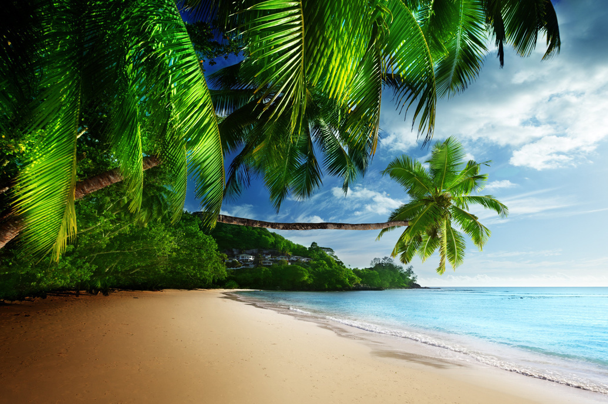
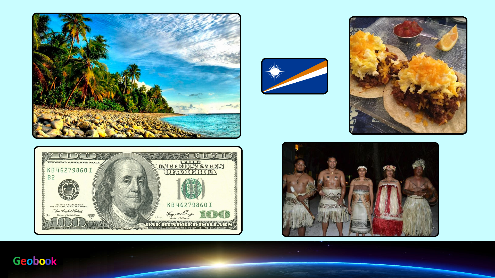

×

Marshall Islands
Климат
Тропический пассатный, на юге - субэкваториальный, морской.
Средняя температура воздуха круглый год держится в районе отметки в +27 C, с небольшими "более холодными" периодами (+20-24 С), приходящимися на сентябрь - ноябрь. С июня по август - самое жаркое время года, хотя фактически разница между самым прохладным и самым теплым месяцем редко когда превышает в среднем 2-3 С. Также интересной особенностью местной погоды является ночная температура, которая хоть и ниже дневной, но фактически на 2-4 градуса выше, чем средний ежедневный минимум. Объясняется это просто - ночи практически всегда обходятся без дождей, выпадающих обычно в виде мощных ливней именно в дневной период.
Температура воды круглый год остается в пределах +20-23 C.
Осадков выпадает около 2000-4000 мм в год. Относительно сухой период фиксируется с января по март, влажный сезон приходится на май-ноябрь. Подавляющее большинство осадков выпадает в светлое время суток. Подобно другим островным группам Тихого океана, погода здесь обычно весьма облачная - большую часть суток над островами висит тонкая пелена слоистых или мощная "стена" кучевых облаков.
____
